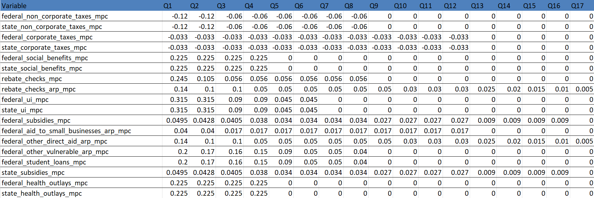

5 Economics Methodology
5.1 Our FIM Math
This section explains our FIM math – the methodology we use to calculate the FIM.
The FIM measures the direct impact of fiscal policy on the growth rate of GDP. More specifically, the FIM is defined as the actual contributions of government purchases, transfers, and taxes to GDP growth less the contributions that would have prevailed if purchases, taxes, and transfers grew at the same rate as potential GDP.
Let’s dive into the methodology!
5.1.1 FIM for Purchases
The purchases FIM is the actual contribution of real government purchases to GDP growth less the contribution that would have prevailed if real purchases were rising with potential GDP.
First let’s define our variables:
- \(G_t\) = nominal government purchases in quarter t
- \(\pi_g\) = growth in the purchases deflator in quarter t, at a quarterly rate
- \(Y_t\) = nominal GDP in quarter t
- \(\mu\) = real potential GDP growth at an annualized rate
The FIM for purchases is the following:
\[ \left(\left(\frac{G_t}{G_{t-1}} - \pi_g\right)^4 - (1 + \mu)\right) \frac{G_{t-1}}{Y_{t-1}} \]
- We first calculate growth in nominal government purchases at a quarterly rate and subtract out inflation: \((\frac{G_t}{G_t-_1} - \pi_g)\).
- We take this result to the power of four to annualize: \((\frac{G_t}{G_t-_1} - \pi_g)^4\).
- Next, we subtract out our counterfactual growth in purchases: \((1 + \mu)\) – this is just the growth rate of real potential GDP. In this equation, \(\mu\) is already annualized.
- To summarize, we get actual real growth in purchases and subtract out counterfactual real growth in purchases (under the alternative scenario where purchases grew at exactly the same rate as real potential GDP).
- Next, we scale our results to purchases’ share of GDP last quarter.
- We calculate the contribution for state purchases and federal purchases. The “purchases FIM” is the sum of the state and federal components, though we often look at both of these contributions separately.
5.1.2 FIM for Transfers
The taxes and transfers component of the FIM is the contribution of taxes and transfers to GDP growth less the contribution that we would have obtained had taxes and transfers increased at the rate of potential GDP.
First let’s define our variables:
- \(C_t\) = nominal consumption in quarter t
- \(\pi_c\) = growth in the PCE deflator in quarter t, at a quarterly rate
- \(Y_t\) = nominal GDP in quarter t
- \(\mu\) = real potential GDP growth at a quarterly rate
- \(T_t\) = nominal taxes or transfers in quarter t
- \(TC_t\) = effect of taxes and transfers on consumption in quarter t (post-mpc data)
Government transfer programs affect GDP through their effect on consumption. We assume that consumers’ responses to changes in taxes and transfers are slow and vary by program. For example, we have different consumption responses to corporate taxes, Medicare payments, Social Security, pandemic EIPs, etc. To translate taxes and transfers into dollars of consumption, we apply the respective marginal propensities to consume (MPCs) over the appropriate lags to each of the tax and transfer pieces. Our MPCs are negative for taxes. The MPCs are discussed more thoroughly in the next section.
We first define the consumption effect of tax/transfer programs:
\[ TC_t = \sum_{j=1}^{j} \sum_{i=1}^{n_j} MPC_{j,t-i} \ T_{j,t-i} \] where \(MPC_{j,t-i}\) is the appropriate MPC for tax and transfer payment \(j\) at lag \(i\). \(J\) is the number of different policies we model, and \(nj\) is the number of quarters over which the policy affects consumption. \(TC_t\) is the sum of all of our post-MPC tax and transfer data. Moving forward, when we refer to the “impulse” from policy, we mean the post-MPC data – the share of net transfers that turned into actual consumption each quarter.
As with purchases, we consider the consumption impulse from net transfers relative to a counterfactual where the impulse rises with potential GDP. We next define \(TC^{FIM}\). This is the actual impulse from policy minus our counterfactual impulse. Our counterfactual impulse is just last quarter’s data grown at the rate of real potential GDP and our PCE deflator (quarterly rates).
\[ TC_t^{FIM} = TC_t - TC_{t-1} (1 + \pi_C + \mu) \] Our counterfactual consumption, \(C_t^c\), is the consumption that we would have obtained had the effect of taxes and transfers on consumption grown with potential: \[ C_t^C = C_t - TC_t + TC_{t-1} (1 + \pi_c + \mu) \] \[C_t^C = C_t - TC_t^{FIM}\]
In words, we take actual consumption, subtract out the actual policy impulse, and replace it with our counterfactual policy impulse. This gives us counterfactual consumption – what consumption would have been if the impulse from net transfers grew at a counterfactual growth rate rather than its actual growth rate. The counterfactual growth rate is (big surprise) the growth rate of real potential GDP.
Our last step is calculating the FIM for net transfers: \[ \left( \left( \frac{C_t}{C_{t-1}} \right)^4 - \left( \frac{C_t^C}{C_{t-1}} \right)^4 \right) \frac{C_{t-1}}{Y_{t-1}} \]
- Above, we first calculate the growth rate of actual consumption and subtract the growth in counterfactual consumption: \(\left( \frac{C_t}{C_{t-1}} \right)^4 - \left( \frac{C_t^C}{C_{t-1}} \right)^4\)
- We annualize both growth rates by taking them to the fourth power.
- Next, we scale to consumption’s share of GDP by multiplying our result by \(\frac{C_{t-1}}{Y_{t-1}}\)
The overall FIM is the sum of the purchases contribution and the net transfers contribution (which we often call the consumption contribution).
5.2 Marginal Propensities to Consume
5.2.1 Why do we apply MPCs?
To calculate the FIM for net transfers, we need to make assumptions about the effect of a transfer/tax policy on consumption. Transfers affect GDP through their impact on consumer spending.
Consider the example of unemployment insurance. Though the government may disburse a certain amount of cash per quarter, a beneficiary might choose to spend only a portion of it. They might also delay their spending to a later period. Or they may not spend the money at all and instead keep it as savings. Our MPCs are meant to capture both the timing and magnitude of the consumption effects of government taxes and transfers. Transfer payments to households affect GDP through the consumption they stimulate– this is what we want to capture!
We do not apply MPCs to federal purchases, state purchases, investment grants, and consumption grants. This data already measures the direct effects of government spending on output. Our supply side IRA series (included as taxes) also does not have an MPC. “Supply side IRA” is construction spending on manufacturing facilities and equipment related to the IRA and CHIPs, which like federal and state purchases, we assume has an instantaneous effect on GDP. The implied MPC is 1 since “supply side IRA” already represents a direct estimate of how much legislation increased manufacturing output.
We apply MPCs when we do believe that the effect of a cash flow on GDP is not immediate. SNAP benefits might be received in quarter 1, but not spent until quarter 2. And some of the initial disbursement might be saved permanently. Thus, MPCs capture the timing effects of taxes and transfers on GDP as well as the fact that these polices may not have a 1:1 effect on output.
5.2.2 How do we apply MPCs?
We can understand an MPC as a vector of fractions. The MPC vector tells us how much of the impulse is spent \(x\) quarters after the disbursement of the funds. Let’s start with a simple example:
mpc = c(0.3,0.2,0.1)- $100 is transferred in the first quarter
Say our first quarter is 2020 Q1. mpc = c(0.3,0.2,0.1) means that if $100 is disbursed in 2020 Q1, then $30 is spent in Q1 (the data times the first entry in our vector) , an additional $20 is spent in Q2, and an additional $10 is spent in Q3, for a total of $60 dollar spent in the first 3 quarters since the fiscal injection. Each entry in the vector is the share of the initial stimulus spent in each successive quarter. Over three quarters, consumers spent 60% of the fiscal injection. Based on our MPC vector, we assume they save the rest.
The example above considers one transfer payment of $100 dollars in one quarter. In reality, our data spans many quarters, so while the current quarter’s disbursement immediately affects consumption, we also need to account for the continuing consumption effects of the last quarter’s stimulus, the second to last quarter’s stimulus, and so on - depending on how long our MPC is. For this reason, we apply our MPCs as a rolling dot product using matrix multiplication.
Let’s do a simple example.
Say we want to apply our MPC from above to five quarters of data. Our MPC vector tells us that the policy affects consumption for three quarters. Our MPC matrix will look like this:
\[ MPC = \begin{bmatrix} 0.3 & 0 & 0 & 0 & 0\\ 0.2 & 0.3 & 0 & 0 & 0\\ 0.1 & 0.2 & 0.3 & 0 & 0\\ 0 & 0.1 & 0.2 & 0.3 & 0\\ 0 & 0 & 0.1 & 0.2 & 0.3 \end{bmatrix} \]
This reflects the assumption that the spending response goes to zero in the fourth quarter. As you can see above, each column of the matrix is our MPC vector. Our MPC matrices always have this staggered structure with the MPC vectors along the diagonal. This structure allows us to calculate a rolling dot product (explained below).
Now say we have a vector of data:
\[ \ data = \begin{bmatrix} 100\\ 120\\ 100\\ 130\\ 100 \end{bmatrix} \ \]
In the context of the FIM, this vector means that the government disbursed $100 in the first quarter, $120 in the second, $100 in the third, and so on. Our data vector and our MPC matrix will always have the same number of rows.
We apply our MPCs by multiplying our matrix and our vector of data:
\[ \begin{aligned} \text{Result} &= \begin{bmatrix} 0.3 & 0 & 0 & 0 & 0\\ 0.2 & 0.3 & 0 & 0 & 0\\ 0.1 & 0.2 & 0.3 & 0 & 0\\ 0 & 0.1 & 0.2 & 0.3 & 0\\ 0 & 0 & 0.1 & 0.2 & 0.3 \end{bmatrix} \cdot \begin{bmatrix} 100\\ 120\\ 100\\ 130\\ 100 \end{bmatrix} = \begin{bmatrix} a_1\\ a_2\\ a_3\\ a_4\\ a_5 \end{bmatrix} \end{aligned} \]
Solving our Example
Let’s solve this equation so you can understand the mathematical procedure as well as why this methodology works within the context of the FIM.
First, let’s fill in \(a_1\). Hopefully you remember linear algebra. If not, I’d recommend looking up how to calculate a dot product.
To get \(a_1\), we sum the product of each entry in the top row of our matrix and each entry in our vector: \(a_1 = 0.3*100 + 0*120 + 0*100 + 0*130 + 0*100\). What does this mean in the context of government spending/the FIM? The government spent 100 in Q1, and consumers spend 30% of it in the quarter of disbursement. They delayed the rest of their spending to a later quarter, so we don’t count it yet. The result is \(a_1 = 30\), the immediate consumption response in Q1 to the first injection by the government.
To get \(a_2\), we sum the product of each entry in the second row of our matrix and each entry in our vector: \(a_2 = 0.2*100 + 0.3*120 + 0*100 + 0*130 + 0*100 = 56\). What does this mean in the context of the FIM? As we established above, the government injected $100 in Q1. Consumers spent 30% of that in the first quarter (the quarter of disbursement). They spend 20% of it in Q2 – this is captured in \(0.2*100\). These are residual effects from last quarter’s injection because consumers delayed some of their spending response. But our vector of data also tells us that the government spent an ADDITIONAL $120 in the second quarter. We know from our MPC that consumers spend 30% of an impulse in the quarter of disbursement, so we need to add that in as well: our result is \(0.2*100 + 0.3*120\), the continued consumption effect of the first quarter’s disbursement plus the effect of the additional money disbursed in the second quarter.
To get \(a_3\), we sum the product of each entry in the third row of our matrix and each entry in our vector: \(a_3 = 0.1*100 + 0.2*120 + 0.3*100 + 0*130 + 0*100\).
- The government spent 100 in the first quarter, and there is still a consumption response from that initial injection. Our MPC tells us that consumers spend 10% of an injection three quarters after the initial disbursement. So, we begin with \(0.1*100\) – accounting for the final effects of our initial $100 in Q1.
- The government spent 120 in the second quarter, and there is a further consumption response from this second injection. Consumers spend 20% of the cash they receive in the second quarter after a disbursement, so we add \(0.2*120\) - the continued spending effect of our second injection.
- Lastly, there’s a new injection in the third quarter, and consumers spend 30 percent of that: \(0.3*100\).
Our result is \(0.1*100 + 0.2*120 + 0.3*100 = 64\)
I hope by now you’re getting the picture. We carry on in a similar fashion for the successive quarters. In \(a_4\), the spending response to Q1’s payment is completely gone. But we still see continuing effects from the disbursements in Q2 and Q3, which we add into the immediate response from a transfer payment in Q4.
The result is the following:
\[ \text{Result} = \begin{bmatrix} 0.3 & 0 & 0 & 0 & 0\\ 0.2 & 0.3 & 0 & 0 & 0\\ 0.1 & 0.2 & 0.3 & 0 & 0\\ 0 & 0.1 & 0.2 & 0.3 & 0\\ 0 & 0 & 0.1 & 0.2 & 0.3 \end{bmatrix} \cdot \begin{bmatrix} 100\\ 120\\ 100\\ 130\\ 100 \end{bmatrix} = \begin{bmatrix} 30\\ 56\\ 64\\ 71\\ 66 \end{bmatrix} \]
The resulting vector is our post-MPC data– what we often call the policy impulse. It tells us the consumption response to a policy in a given quarter: the sum of the consumption response to this quarter’s transfer payment and any remaining effects from prior quarters if consumers delayed their spending response to prior rounds of stimulus.
This is a simple example with 5 quarters of data, but our actual data vectors are much longer. Nonetheless, the mathematical procedure and the intuition behind it remains the same.
Our MPCs vary in length and magnitude depending on the policy. For example, we assume that subsidies from the Paycheck Protection Program (PPP) had a much smaller and slower effect on private spending per dollar of government expenditure than did unemployment insurance benefits because jobless workers tend to spend the benefits quickly. We assume that some of the pandemic policies have longer MPCs. That is, they affected consumer spending many quarters after the initial disbursement. Taxes have negative MPCs.
5.2.3 Our MPCS
As of my writing this, our MPCs are the following:

Our MPC matrices are stored in fim/cache as RDS files.
5.2.4 Creating/Editing an MPC Matrix
Adjusting an MPC matrix is easy to do. Here is the function you should use:
mpc_matrix <- function(mpc_vector, dim) {
## Input argument pre-checks
# Check if mpc_vector is a numeric vector
if (!is.numeric(mpc_vector)) {
stop("mpc_vector must be a numeric vector.")
}
# Check if dim is a single positive integer
if (!is.numeric(dim) || length(dim) != 1 || dim <= 0 || dim %% 1 != 0) {
stop("dim must be a single positive integer.")
}
# Check if the length of mpc_vector exceeds dim
if (length(mpc_vector) > dim) {
n <- length(mpc_vector) - dim
warning(glue::glue("The length of mpc_vector exceeds the specified dim by {n}. ",
"The last {n} elements of mpc_vector do not appear in the",
"output matrix."))
mpc_vector <- head(mpc_vector, -n) # Adjust mpc_vector to fit within dim
}
## "Meat" of the function
# Produce a vector v by appending zeroes to mpc_vector such that the total
# length of v is equal to (dim + 1).
v <- c(mpc_vector, rep(0, times = dim - length(mpc_vector)+1))
# Populate a matrix, column-wise, that has a width of (dim+1) and a length of
# (dim) using vector v. This deposits desired values in the lower triangle.
M <- matrix(v, nrow=dim,ncol=dim+1, byrow = FALSE)
# Keep all but the last column to produce a square matrix.
M <- M[,1:dim]
# Overwrite any entries in the upper triangle with zeroes to produce a lower
# triangular matrix
M[upper.tri(M)] <- 0
return(M)
}This is a simple function takes an MPC vector (you must define this) and a dimension as its inputs. If Louise ever needs you to change the MPCs, you can easily define a vector that is equivalent to the new MPC:
mpc_vector_new <- c(x,y,z...)
The dimension should be set to 259 – the length of our data. If you’re an RA reading this in 2032, it’s time to expand our matrix dimensions because our data is now longer than 259 entries! I’m surprised the FIM has made it this far! You’ll need to expand both the matrices and the placeholder_nas object that stores our data series (see the FIM code walk-through for instructions on how to do this). Make sure you set the matrix dimensions to the exact number of quarters stored in our input data objects. It is critical that the number of rows contained in our raw data matches the dimensions of our matrices!
You can execute the code below to create your new matrix:
new_mpc_matrix <- mpc_matrix(mpc_vector = mpc_vector_new, dim = 259)
The function will structure the matrix so that it matches our typical MPC matrix format. We store our MPCs in the cache folder as RDS files. Once you are confident in and satisfied with the final version of an MPC matrix, you should also cache it. It is inefficient to regenerate our MPCs each time we run the code. Store it as an RDS file and make sure to use the same naming convention.
Recall from the code walk-through how our MPCs are applied:
# State UI
post_mpc_state_ui <- mpc(x = state_ui_test$data_series,
mpc = readRDS("cache/mpc_matrices/state_ui.rds"))If you change the name of an MPC, you must also adjust this section of code in fiscal_impact_BETA.R.